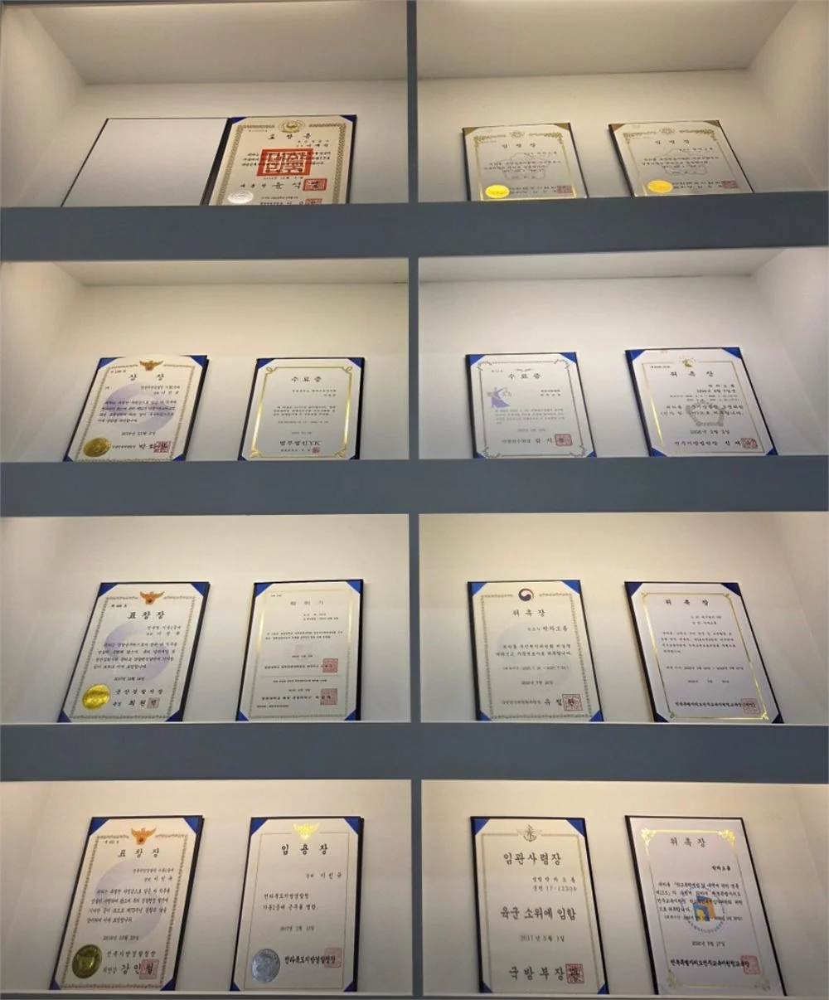

Attorneys
대형로펌 · 경찰대 · 군사경찰 출신 대표변호사 2인
대형로펌에서 갈고닦은 송무 역량과 공직 시절 쌓은 베테랑급 실무경험을 바탕으로 대형로펌 수준의 질 높은 법률 서비스를 제공드릴 것을 약속드립니다.
“늘 초심을 기억하며 신뢰와 정직함으로 함께 걷겠습니다.”
군사경찰로 근무하여 군 사건에 있어서 초기 대응의 중요성에 대해 누구보다 잘 알고 있으며, 대형로펌에서 다양한 분야의 업무를 수행하면서도 좋은 성과를 내어 전체 변호사 중 우수변호사로 선정되기도 하였습니다.
처음 변호사가 되었을 때, 그 열정적이었던 초심을 늘 기억하며 언제나 진심을 다해 조력하겠습니다.
01 학력
- 원광대학교 법학전문대학원
- 군산대학교 법학 · 디지털 포렌식
- 군산고등학교
02 경력
- 現 법률사무소 차민 대표변호사
- 前 법무법인 YK (우수변호사)
- 前 제53보병사단 군사경찰대 지원과장
03 위촉 · 활동
- 전주지방법원 조정위원 (민사, 가사)
- 대한변호사협회 청년변호사특별위원회 위원
- 대한변호사협회 미래전략정책위원회 위원
- 국민권익위원회 비실명대리신고 자문변호사
- 군산대학교 인권센터 인권위원회 위원
- 전주교육지원청 학교폭력대책심의위원회 위원
- 전주교육지원청 교권보호심의위원회 위원
“든든한 당신의 동반자가 되겠습니다.”
경찰대학 및 수사관 실무, 나아가 대형로펌 형사팀에서 형사 업무를 전담하며 수많은 형사 사건을 경험하였습니다.
수사 실무 경험을 바탕으로 수사관의 관점과 그에 따른 전략을 구상하여 사건마다 맞는 대응을 함께 찾겠습니다.
평범한 일상을 되찾는 가장 든든한 동행.
일상을 회복하는 모든 순간, 함께 하겠습니다.
01 학력
- 원광대학교 법학전문대학원 (수석입학)
- 경찰대학
- 공주한일고등학교
02 경력
- 現 법률사무소 차민 대표변호사
- 前 법무법인(유한) 바른 형사그룹
- 前 법무법인 YK 강남본사 경찰형사부
- 前 군산경찰서 수사과
- 前 경찰청 경무국
03 위촉 · 활동
- 군산시 의정비심의위원회 위원
- 익산지방국토관리청 청원심의회 위원
Columns
변호사가 직접 쓴 법률 칼럼
박차오름 대표변호사30편
- 군산에서 불법행위 손해배상을 청구하려면 — 책임 성립, 위자료, 관할 법원까지
- 익산에서 상간소송을 하는데 결정적 증거가 없다면 — 배우자를 증인으로 세울 때 알아둘 것
- 익산에서 전세 만기가 지났는데 보증금이 안 나온다면 — 소송 전에 먼저 진단할 네 가지
- 군산에서 상속재산분할 심판을 청구한다면 — 언제 필요하고 어떻게 진행되나
- 군산에서 공유물분할소송을 당했다면 — 경매만이 답은 아닙니다
칼럼 25편 더 보기
- 군산에서 이혼을 결심했다면 — 이혼하자고 말하기 전에 점검할 세 가지
- 부안에서 상간소송 증거를 모은다면 — 카톡·블랙박스·CCTV, 무엇이 쓰이고 무엇이 위험한가
- 군산에서 임대차가 끝났는데 원상회복으로 다툰다면 — 어디까지 복구해야 하나
- 군산에서 학폭위 심의를 앞두고 있다면 — 진행 순서와 자주 나오는 질문
- 익산에서 학교폭력 신고를 했다면 — 조사부터 학폭위 조치, 불복까지
- 군산에서 동업자가 나가겠다고 한다면 — 동업 탈퇴와 제명, 지분 정산의 기준
- 전주에서 이혼은 하지 않고 상간소송만 고민한다면 — 망설이는 이유와 그래도 하는 이유
- 서천에서 군 형사사건에 연루되었다면 — 군형법과 형법은 무엇이 다른가
- 군산에서 전월세 계약을 연장한다면 — 묵시적 갱신, 갱신요구권, 합의 재계약의 차이
- 군산에서 가해학생이 학폭 조치에 불복했다면 — 피해학생은 의견서만 낼까, 참가신청을 할까
- 전주에서 내용증명을 보내기 전에 — 효력과 한계, 작성법, 이후 절차까지
- 익산에서 원상회복 비용 때문에 보증금을 못 받고 있다면 — 통상의 손모와 보증금 공제의 한계
- 군산에서 군 복무 중 폭행 사건에 연루됐다면 — 합의해도 끝나지 않는 군 폭행의 특례
- 군산에서 인스타그램 계정이 갑자기 정지되었다면 — 재검토 요청부터 내용증명까지
- 논산에서 이혼소송을 시작한다면 — 절차별 소요기간 한눈에 보기
- 전주에서 학교폭력 가해학생으로 신고됐는데 억울하다면 — 다섯 가지 유형과 소명 방법
- 군산에서 강제집행정지를 신청한다면 — 결정보다 먼저 계산해야 할 공탁금
- 김제에서 상간소송을 준비한다면 — 입증할 것, 증거 수집의 한계, 기한까지
- 군산에서 헤어진 연인이 사귈 때 준 돈을 돌려달라고 한다면 — 증여인가 대여인가
- 군산에서 부모님이 돌아가셨다면 — 상속 직후 놓치면 안 되는 네 가지 기한
- 군산에서 전세보증금을 못 받고 있다면 — 기다리기 전에 밟아야 할 순서
- 익산에서 빌려준 돈을 못 받고 있다면 — 대여금 소송에서 증명해야 할 세 가지
- 군산에서 부모님 치매로 성년후견을 고민한다면 — 누가 후견인이 되고 무엇을 해야 하나
- 군산에서 민사조정기일 통지를 받았다면 — 조정의 종류, 효력, 이의신청 2주
- 군산에서 유류분 반환을 고민한다면 — 계산 방법, 특별수익, 1년·10년 기한까지
이민규 대표변호사69편
- 군산 사건이 공소청으로 송치되었다면 — 사실관계 확인과 고소인 등 면담, 증거가 안 되는 진술의 의미
- 익산에서 상해로 조사받는다면 — 진단서가 있어도 상해가 아닐 수 있는 경우
- 군산에서 폭행을 당했다면 — 폭행과 상해의 경계, 처벌불원서를 내기 전에 확인할 것
- 군산에서 구속영장이 청구됐다면 — 영장실질심사에서 판사가 보는 것과 가족이 준비할 것
- 군산에서 교통사고가 났다면 — 변호사는 언제 필요할까, 가해자와 피해자의 기준이 다릅니다
칼럼 64편 더 보기
- 전주에서 음주운전 경찰 출석 연락을 받았다면 — 일정 조율부터 조서 확인, 임시운전증명서까지
- 군산에서 성범죄 사건이 송치되었다면 — 2026. 10. 2.부터 시행된 전건송치의 의미
- 군산에서 자녀가 통신매체이용음란죄로 신고됐다면 — 대화 내역부터 지키세요
- 익산에서 강제추행으로 고소당했다면 — 성립 기준, 합의와 무혐의 사이의 판단, 처벌 수위
- 군산에서 공무원이 감사실 출석 요구를 받았다면 — 조사 전·중·후 대응 원칙
- 군산에서 해고를 당했다면 — 해고인지 확인하는 법과 부당해고 구제신청 3개월
- 군산에서 카메라등이용촬영 혐의로 휴대전화를 압수당했다면 — 사진 한 장으로 끝나지 않는 이유
- 군산에서 직장 내 성희롱을 겪었다면 — 증거 확보부터 회사 신고, 노동청 진정, 고소까지
- 군산 사업장에 직장 내 괴롭힘 신고가 들어왔다면 — 사용자는 어디까지 해야 하나
- 익산에서 소년보호처분을 앞두고 있다면 — 1호부터 10호까지 무엇이 다른가
- 군산에서 거짓말탐지기 검사를 제안받았다면 — 응할지 말지 판단하는 기준
- 군산에서 임금·퇴직금을 못 받았다면 — 노동청 진정과 고소, 무엇이 다른가
- 군산에서 사기 고소를 하려 한다면 — 처벌과 회수를 나누고, 고소장은 요건에 맞춰 쓰세요
- 군산에서 업무상횡령으로 고소당했다면 — 개인 계좌로 돈이 나갔다고 모두 횡령은 아닙니다
- 군산에서 스토킹으로 신고됐다면 — 스토킹범죄의 요건, 접근금지 조치, 조사 전에 정리할 것
- 군산에서 업무방해로 고소당했다면 — 벌금은 얼마나, 위자료까지 물어야 하나
- 군산에서 채무자가 재산을 가족 명의로 돌렸다면 — 강제집행면탈죄가 되는 경우와 아닌 경우
- 군산에서 협박을 당했다면 — 어떤 말이 협박죄가 되는지, 고소 전에 남겨야 할 증거
- 군산에서 고소했다가 무고로 몰릴까 걱정된다면 — 무고죄가 되는 허위와 되지 않는 경우
- 군산에서 성범죄 피해를 입었다면 — 고소 전에 알아야 할 것들
- 군산에서 고소당해 합의를 고민한다면 — 형사합의의 효과, 시기, 합의서에 꼭 넣을 것
- 전주에서 음주운전으로 단속됐다면 — "벌금이면 끝"이 아닌 세 가지 경우
- 군산에서 합의가 안 된다면 — 형사공탁의 효과와 달라진 제도, 피해자 의견 청취와 회수 제한
- 군산에서 사문서위조 혐의를 받는다면 — 가족 이름으로 대신 서명해도 범죄가 될까
- 군산에서 보이스피싱 피해를 입었는데 범인을 못 잡았다면 — 대포통장 명의자에게 손해배상을 청구할 수 있을까
- 군산에서 처벌을 앞두고 있다면 — 기소유예·집행유예·선고유예, 무엇이 다르고 무엇이 남을까
- 익산에서 초범이면 기소유예를 받을 수 있을까 — 초범이어도 어려운 세 가지 경우와 준비할 것
- 익산에서 모욕죄로 고소당했다면 — 공연성·특정성·모욕성, 세 가지 요건을 하나씩 따져 보기
- 군산에서 성범죄 혐의를 받고 있다면 — 무혐의를 다퉈 볼 수 있는 사건의 유형
- 전주에서 기소유예를 바란다면 — 검사가 보는 세 가지, 조건부 기소유예와 형사조정, 피해야 할 행동
- 군산에서 음주·약물 운전 중 사람이 다쳤다면 — 교특치상과 위험운전치상은 무엇이 다른가
- 군산에서 억울하게 고소당했다면 — 무혐의·무죄의 의미, 조사에서 피해야 할 말, 진술의 빈틈을 짚는 방법
- 군산에서 몇 달 지난 일로 성범죄 고소를 당했다면 — 기억을 복원하고 진술을 준비하는 법
- 익산에서 기소되었다면 — 재판에서 무죄를 다투는 다섯 가지: 공소장, 위법수집증거, 증거 확보, 반대신문, 항소
- 군산에서 상간소송을 준비한다면 — 위자료 액수는 무엇으로 정해지나
- 군산에서 약식명령(벌금)을 받았다면 — 약식기소의 의미, 14일과 7일, 정식재판 청구를 판단하는 기준
- 익산에서 정식재판을 청구할지 고민된다면 — 약식명령이 안 되는 사건, 7일 기한, 형종 상향 금지와 벌금 증액 가능성
- 군산에서 보이스피싱 수거책으로 조사를 받는다면 — "알바인 줄 알았다"가 받아들여지기 어려운 이유
- 군산에서 검사가 항소했다면 — 항소심이 사실상 마지막인 이유, 1심 무죄·집행유예가 뒤집힐 가능성, 차선책과 변론재개
- 군산에서 경찰 출석 요구를 받았다면 — 변호인 동석이 필요한 사건과 조사 전 준비
- 군산에서 가족이 구속되었다면 — 구속적부심사, 법원이 보는 것과 영장 발부 이후 달라진 사정
- 익산에서 동업자가 돈을 마음대로 썼다면 — 동업 형태에 따라 횡령이 갈립니다
- 군산에서 모욕죄로 고소당했다면 — 성립 요건부터 조사 전 대응, 합의까지
- 군산에서 구속된 채 재판을 받는다면 — 보석의 원칙과 예외, 청구서에 담을 것, 구속취소·구속집행정지
- 군산에서 압수수색을 당했다면 — 현장에서 확인할 다섯 가지, 긴급체포와 영장 없는 압수, 끝난 뒤 할 수 있는 것
- 익산에서 고소를 당해 경찰 조사를 앞두고 있다면 — 피고소인이 준비하고 말해야 할 것
- 군산에서 명예훼손 고소를 준비한다면 — 성립 요건, 네 가지 유형, 증거 확보 방법
- 군산에서 휴대전화 포렌식을 앞두고 있다면 — 임의제출의 범위, 참여권, 다른 자료가 발견됐을 때의 절차
- 군산에서 절도 혐의로 연락을 받았다면 — 성립요건과 처벌 수위, 양형에서 중요한 것
- 군산에서 고소했는데 불송치 결정을 받았다면 — 이의신청에서 다시 짚어야 할 네 가지
- 군산에서 대표이사가 업무상배임으로 고소당했다면 — 손해와 배임은 다릅니다, 경영판단과 고의의 기준
- 군산에서 술자리 후 준강제추행으로 조사를 받는다면 — ‘취했다’와 ‘항거불능’은 다릅니다
- 군산에서 공갈로 고소당했다면 — 협박·강도·사기와의 차이, 다툴 수 있는 세 갈래, 권리행사와 공갈의 경계
- 군산에서 고소한 뒤 고소인 조사 연락을 받았다면 — 범죄일람표와 진술조서 확인이 중요한 이유
- 군산에서 장물취득으로 조사를 받는다면 — 장물이 되는 세 가지 요건, '장물인 줄 알았는가'의 판단 기준
- 군산에서 스토킹 피해를 겪고 있다면 — 지금의 보호 절차와 2027년 시행되는 피해자보호명령
- 익산에서 음주운전 조사를 마쳤다면 — 검찰 처분, 양형자료, 면허취소 불복까지
- 군산에서 형사재판 중 피해 배상을 받으려면 — 배상명령 신청 대상, 기한, 각하되지 않는 신청서
- 익산에서 카메라등이용촬영 혐의로 포렌식을 앞두고 있다면 — 양형 요소 대부분이 이 단계에서 드러납니다
- 보령에서 공무원 징계를 앞두고 있다면 — 형사처벌과 징계, 소청까지
- 군산에서 자녀 사건이 소년보호재판으로 갔다면 — 심리기일 당일 무엇을 묻고 무엇을 준비하나
- 군산에서 운전자폭행 혐의를 받는다면 — 일반 폭행죄와 무엇이 다른가
- 군산에서 음주운전으로 단속되었다면 — 경찰조사 질문, 면허 처분, 임시운전증명서까지
- 부안에서 전세사기를 당했다면 — 민사·형사·피해자 지원, 세 갈래 대응
